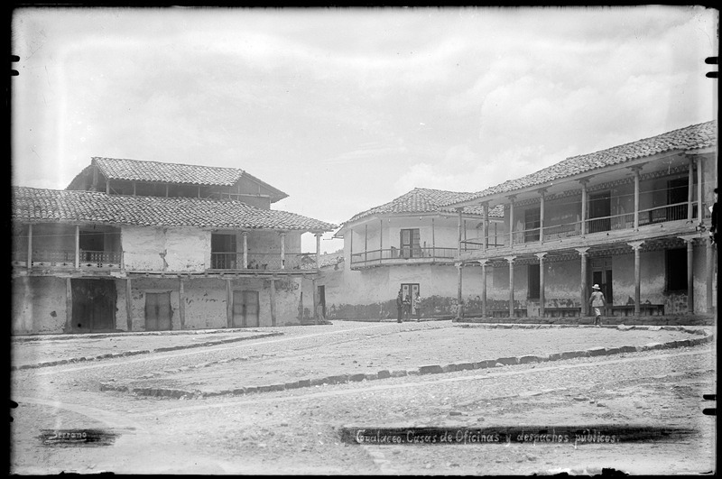
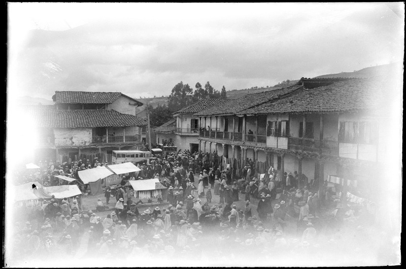
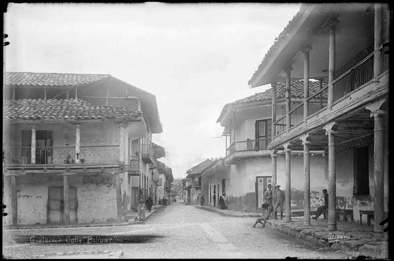

El origen del nombre de “La Gran Colombia” o “Republica de Colombia” fue un estado creado por el Congreso de Angostura, que existió entre los años 1820 y 1831, y era conformado por Venezuela y la Nueva Granada, además de Panamá, Quito y Guayaquil.
A continuacion algunas de las imagenes referentes a la Calle Gran Colombia:
Casa de oficinas y despachos públicos entre los años 1920 – 1930
Dia de feria en la plaza de Gualaceo entre los años 1920 – 1930
Calle Bolivar entre los años 1920 – 1930
Autor de las imágenes previamente expuestas: Serrano Manuel Jesús; Cuenca, Azuay